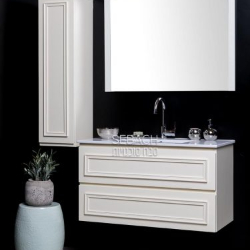

קלאסיק קרמיק
קלאסיק קרמיק בית שמש עוסקת בשיווק קרמיקה, פורצלן, כלים סניטרים, ברזים, פרקט ומוצרים משלימים נוספים לעיצוב הבית. לקלאסיק קרמיק בית שמש ניסיון של שנים בתחום עיצוב הבית. קלאסיק קרמיק מלווה פרויקטים רבים בניהם: מגדלי מגורים, מרכזים מסחריים, קניונים, דיור למשתכן, גנים ובתי ספר. אצלנו תמצאו מוצרים ממיטב המותגים והיצרנים המובילים בעלום.
באולם התצוגה המפואר שלנו תוכלו להתרשם מהמגוון הרחב של המוצרים והאפשרויות הבלתי מוגבלות בקטגוריות השונות בעיצוב הבית. מחלקת ריצופים מרהיבה המכילה ריצופים במידות ורמות גימור שונות מאריחי קרמיקה, פורצלן, אבן, עץ ופרקט למינציה. חדרי רחצה מעוצבים ואריחים לחיפוי במגוון רחב של גוונים שילובים ואפשרויות רבות של שילוב. מחלקת הברזים מציגה ברזים ואביזרי אמבטיה מהמותגים המובילים בעולם ומכילה ברזים, ראשי מקלחת, מערכות מים מתקדמות, ברזי קיר וברזי מטבח בסגנונות עיצובים שונים. כמו כן באולם התצוגה תזכו לשירות אדיב ומקצועי מהצוות והמנוסה
אם הקירות היו יכולים לדבר… מגוון רחב של חיפויים לקירות הבית. החל מחיפויי קירות לחדרי רחצה, למטבחים, לחדרי שינה ועוד. קטלוגים שלמים של אריחי חיפוי מחומשים, מלבניים, מרובעים ואריחים גדולים ומדוקקים למראה יוקרתי.
חיפויים במגוון טקסטורות, צבעים, דוגמאות וסוגים שונים של אריחי חיפוי וביניהם: חיפויי קירות מגרניט פורצלן, חיפויי קיר בטון וחיפויים מעוצבים נוספים, למראה המושלם של הבית.
.jpg)
עולם שלם של מרצפות לבית במגוון גדלים, טקסטורות, צבעים וגימורים. ריצוף גרניט פורצלן ייחודי המעניק מראה מושלם לחללים השונים בבית. ריצוף מפורצלן לבית עמיד במיוחד בתנאי שחיקה מהקשים ביותר. החומר עצמו קשה ודחוס במיוחד אודות לתהליך ייצור מורכב ומוקפד. צפו בקטלוגים של החברות המובילות בתחום ייצור הריצופים: החל מריצוף גרניט פורצלן במראה בטון, שיש ועד לאריחי ריצוף דמויי עץ. ריצוף איטלקי לבית ועד למרצפות טרצו.
.jpg)
בשנים האחרונות נוצרה חשיבות עצומה לעיצוב חדרי אמבטיה בחלל הבית ובמיוחד בבחירת ארון מקלחת חדשניים ומעוצבים כחלק מתפיסה חזותית מודרנית. יותר ויותר אנשים מעדיפים לשדרג את החלל ולתת מנוחה לנפש בחדר אמבט, המשרה אווירת רוגע, אסתטיקה ובעיקר נוחות. ארון לאמבטיה מעוצב בחלל חדר הרחצה משמש פרמטר עיצובי ופונקציונאלי, כאשר השילוב משדרג את מראה החלל כולו. שילוב נכון של ארונות לאמבטיה יכול להוסיף ולשפר במיוחד את האווירה. צוותנו המקצועי כאן לעזור לכם לבחור את העיצוב הנכון. ארונות מקלחת המעוצבים של חברת קלאסיק קרמיק עשויים ממגוון חומרי גלם: עץ מלא, סנדוויץ ופוסטפורמינג, משולבים עם מראות קריסטל, פרזול חדשני ואיכותי, זכוכיות בגוונים שונים וכיורים מעוצבים. אנו מציעים מחירים נוחים במיוחד לקהל העסקי והפרטי. בדיקת המפרט הטכני חשובה לא פחות מעיצוב ארון מקלחת, שכן לא מחליפים ארון אמבטיה מעוצב כל שנה. לפני שמזמינים ארון אמבט מעוצב או ארונות מקלחת, חשוב לבדוק את המידה המדויקת של חדר האמבט בכלל ובפרט של אזור ארון אמבטיה, וזאת בכדי לבצע ניצול מקסימלי של המרחב. באתר האינטרנט שלנו ישנה קולקצייה רחבה של ארונות אמבטיה מעוצבים, לבחירה מסדרות שונות ועיצובים לכל סגנון. כך שגם אתם יכולים למצוא ארון אמבטיה בעיצוב שמתאים לכם.
 קלאסיק אילי
קלאסיק אילי
 קלאסיק אופיר
קלאסיק אופיר
 סיטי ברצלונה
סיטי ברצלונה
סיטי סידני
 סיטי טוקיו
סיטי טוקיו
סיטי ניו יורק
 סיטי פריז
סיטי פריז
 סיטי רומא
סיטי רומא
 סיטי מדריד
סיטי מדריד
 סיטי ברלין
סיטי ברלין
סיטי גרוזלם
סיטי ברן
סיטי ציריך